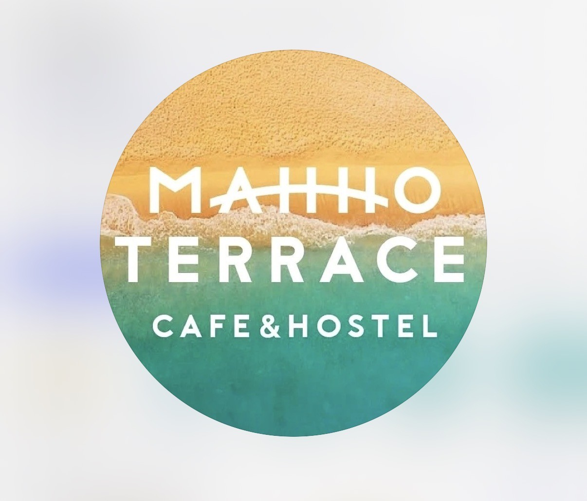
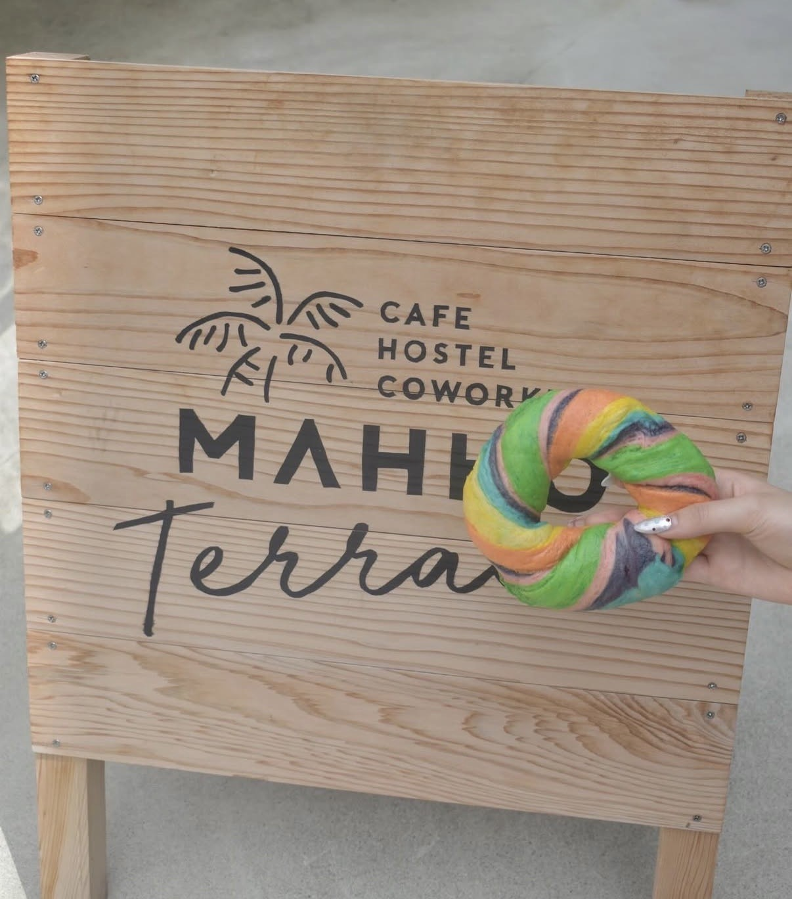
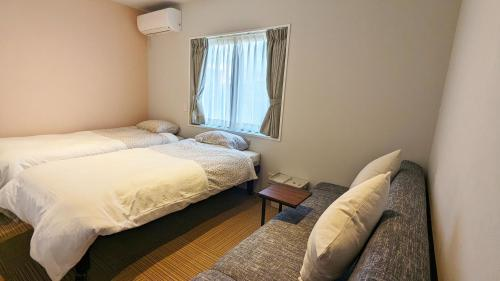
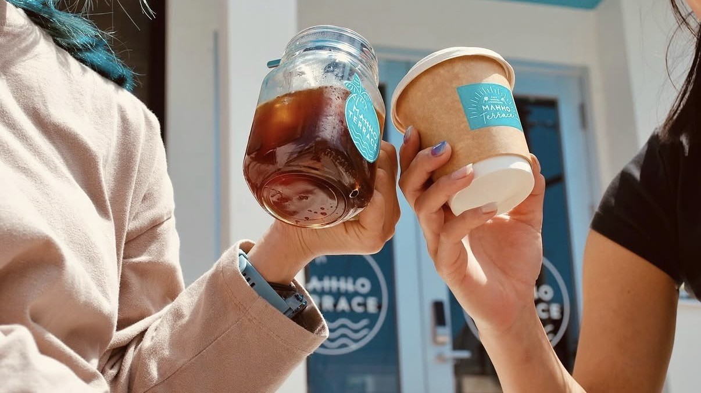
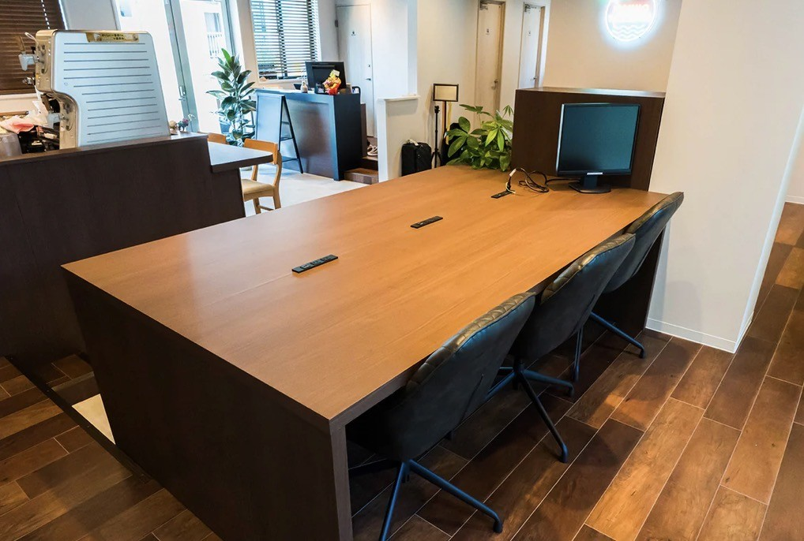
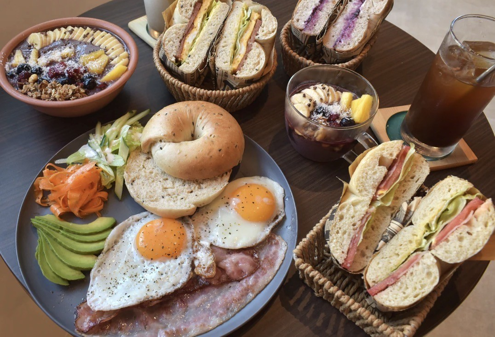
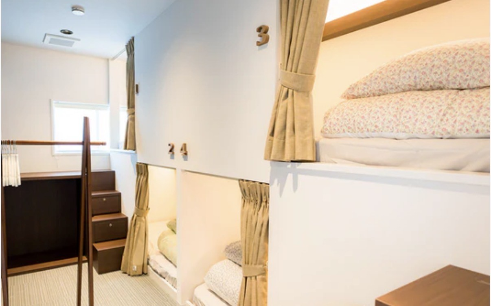

Mahho Terraceマッホテラス
マホーテラス

In the middle of Miyakojima’s everyday rhythm, Mahho Terrace offers a quiet balance — a place where travel, work, and rest come together naturally. More than just a place to stay, it’s a space designed for ease. Whether you're starting your morning with coffee downstairs, heading out to explore the island, or returning to unwind, everything flows simply here.
宮古島の暮らしの中心にあるマホーテラスは、 旅と日常が自然に重なる場所です。 カフェで一日を始め、島を巡り、また戻ってゆっくり過ごす。 そんな心地よい流れの中で、無理なく過ごせる空間が整っています。
Why We Recommend Itおすすめする理由
Selected as a comfortable base for travelers who want simple convenience, warmth, and easy access to the heart of Miyakojima.
旅の拠点としての使いやすさ、あたたかさ、宮古島の中心地へのアクセスの良さを大切に紹介しています。
Located in the city area of Miyakojima, Mahho Terrace makes it easy to settle into island life without overthinking it. The space offers both private rooms and shared areas, giving guests flexibility depending on how they want to spend their time — quietly, socially, or somewhere in between. Downstairs, the cafe adds another layer to the experience. It’s not just convenient — it becomes part of the stay. Slow breakfasts, midday resets, or casual moments between plans. Everything here is simple, intentional, and easy to return to.
宮古島の市街地にあるマホーテラスは、 無理なく島の暮らしに馴染める場所です。 個室と共有スペースが用意されており、 静かに過ごしたい方も、人とのつながりを楽しみたい方も、 自分のペースで滞在できます。 併設されたカフェは、ただ便利なだけでなく、 滞在の一部として自然に溶け込む存在です。 朝のゆったりした時間や、日中のひと休みにも心地よく寄り添います。 シンプルで、心地よく、何度でも戻りたくなる空間です。
Photos 写真






Location 場所
Address
182-3 Hirara Nishizato, Miyakojima, Okinawa
〒906-0012
沖縄県宮古島市平良西里182-3
Phone
0980-79-8065
電話番号：0980-79-8065
📞 Call Now 電話する 📍 Googleマップで見る Open in Google Maps 📷 Instagram インスタグラム 🌐 Website 公式サイト宮古島の事業者さまへFor Miyakojima Businesses
お店やサービスを、英語と日本語で丁寧に紹介しませんか？
My Miyakojimaでは、宮古島の事業者さま向けに、雰囲気やストーリーまで伝わる紹介ページを制作しています。観光で訪れる方にも、島に住む方にも届くように、英語と日本語の両方で掲載できます。
My Miyakojima creates curated bilingual feature pages for selected local businesses, helping visitors understand your story before they contact you.
掲載・制作の相談をするContact My Miyakojima